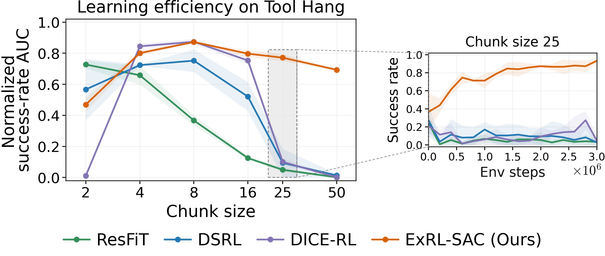
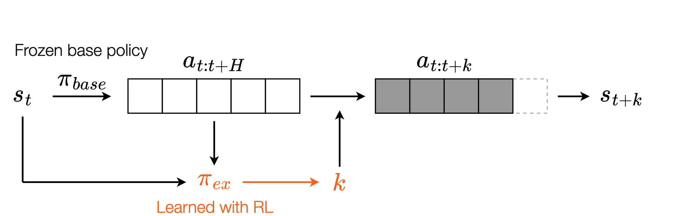
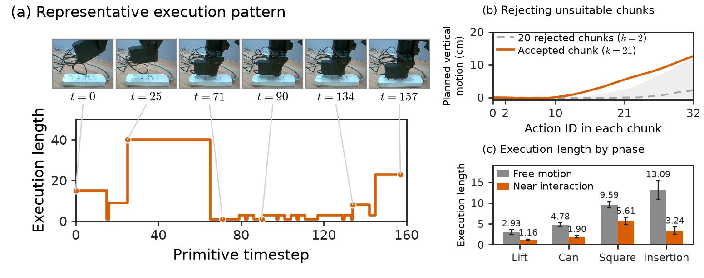
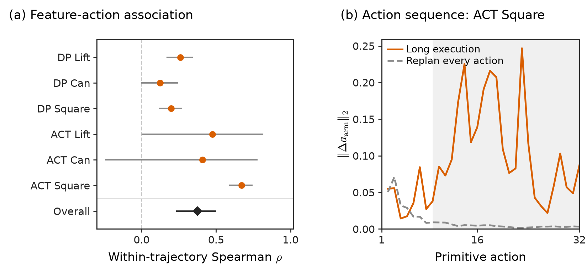

ExRL often uses longer executions during free motion and shorter ones near an object or target. In power insertion, it repeatedly replans near contact, then commits to a longer execution to finish inserting the plug.
Abstract
Predicting long action chunks, often spanning dozens of timesteps, has become a key ingredient in increasingly capable robot policies. In this paper, we find that adapting these long-chunk policies with existing reinforcement learning (RL) methods can require many online samples due to the high dimensionality of the action chunks being optimized, making such adaptation impractical in real-world scenarios where interaction data are costly to collect. Our key insight is to shift adaptation from optimizing actions to optimizing how long to execute each predicted action chunk. This keeps the adaptation space low-dimensional while its expressivity grows with the chunk size. We thus introduce Execution at the Right Length (ExRL), a simple approach which augments the base policy with a lightweight adapter that predicts the execution length of each chunk and is trained using standard off-policy RL algorithms. Across simulation benchmarks and real-world robotic tasks, ExRL enables sample-efficient adaptation of a diverse range of long-chunk policies with minimal task-specific hyperparameter tuning.
Adapting π0.5 with ExRL
ExRL improves π0.5 through online interaction by learning how long to execute each predicted chunk. The base policy stays frozen throughout RL.
Nine rollouts from the base policy and nine successful rollouts with ExRL.
The challenge of adapting long-chunk policies
Modern robot policies often predict dozens of actions at a time. These long chunks support smooth, coordinated behavior, but make online adaptation harder. Existing RL methods optimize actions or latent variables in a space that grows with the chunk size. On Tool Hang, these methods become less sample-efficient as chunks get longer.

ExRL: learning execution length with RL
At each policy query, ExRL observes the current state and the predicted action chunk, then selects an execution length k. The robot executes the first k actions, observes the new state, and queries the base policy again.

A short execution allows an early correction; a longer execution lets a useful sequence unfold. Learning this choice gives the robot control over when to replan through a single scalar decision. Longer chunks offer more choices while the decision remains one-dimensional.
We train the adapter with off-policy RL. Successful online trajectories can also improve the base policy through behavior cloning, and offline demonstrations provide additional experience for learning execution lengths.
Sample-efficient adaptation across robot policies
ExRL improves long-chunk policies across Robomimic, Adroit, and LIBERO, from Diffusion Policy and ACT to π0, π0.5, π0-FAST, and Cosmos Policy.
Diffusion Policy and ACT
On Robomimic, ExRL adapts policies with 50-action chunks, including challenging tasks such as Tool Hang and Transport. On Tool Hang with Diffusion Policy, ExRL exceeds 90% success while the other RL baselines remain around 20% or below.

Dexterous manipulation
On Adroit, ExRL adapts Diffusion Policy across four dexterous hand tasks. Distilling successful trajectories back into the base policy further improves learning.

Generalist robot policies
The same execution-length interface adapts flow-based VLAs, an autoregressive VLA, and a world action model. On LIBERO, ExRL improves π0.5 from nearly 0% to over 90% success within 200,000 environment steps.

Watching ExRL choose execution lengths
The videos show each rollout together with the execution length selected by ExRL.
What does ExRL learn about action chunks?
Replan near contact
Let useful chunks unfold
On Square, ExRL cuts short proposals with little predicted progress, then executes more of a chunk that contains a sustained grasp-and-lift motion. Short executions create opportunities for correction and a new prediction; longer executions preserve progress through a useful sequence.

Why can frequent replanning get stuck?
When successive observations produce similar policy features, querying the policy again can reproduce nearly the same first action. The robot may keep moving without reaching the later actions in a useful chunk. Allowing the chunk to continue preserves that progression.

ExRL learns to match execution length to both the situation and the proposed actions.